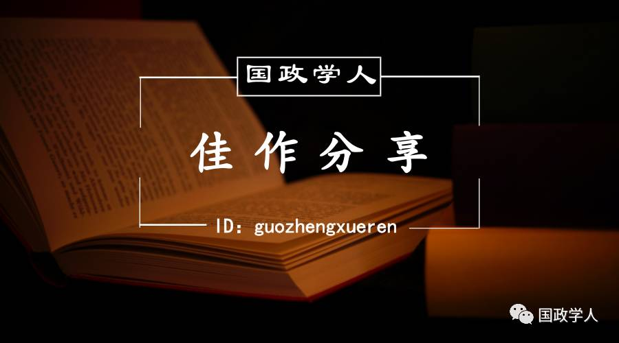
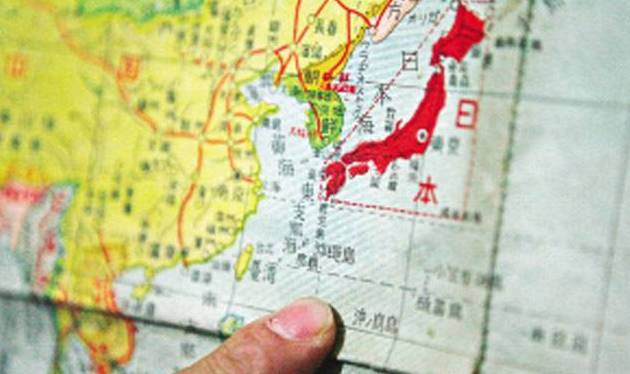
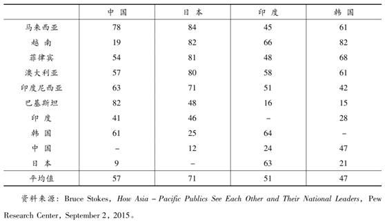
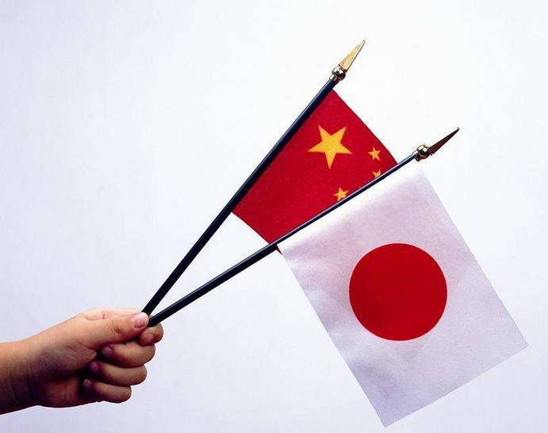
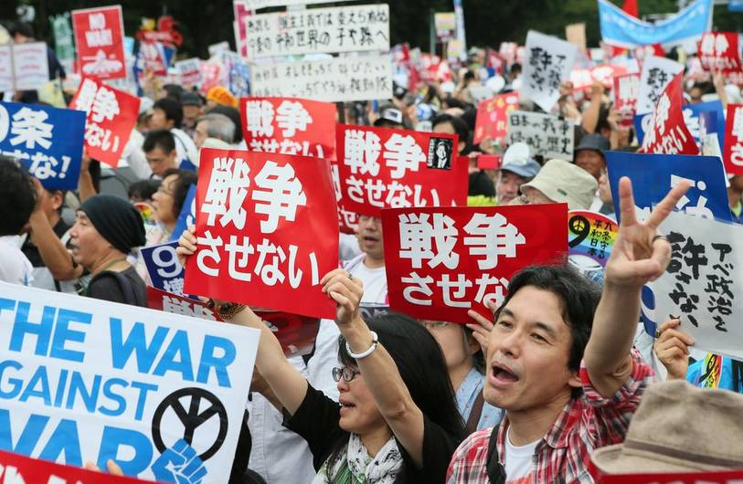
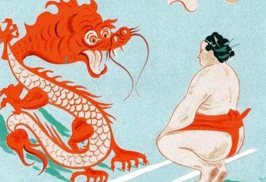

收录于合集

中国公共外交与对日方略
作者简介：
门洪华，同济大学同济特聘教授，同济大学中国战略研究院院长、政治与国际关系学院院长，博士生导师。
本文来源：
《日本学刊》2016年第6期
获取方式：
后台（聊天页面）回复“ 日本学刊 ”自动获取
内容提要： 中国公共外交处于起步阶段，在消除“中国威胁论”的负面影响等方面尚有较大的施展空间，在提升国家形象方面仍有较大潜力可挖。中国对日公共外交的实施，有助于推动民间交往，促进双边关系的解冻，可视为消除“中国威胁论”的有效方式。中日关系是世界上最复杂的双边关系。当前中日关系面临严重局面，日本民众对中国看法处于恶化状态，这是中国对日公共外交最为棘手的挑战。应开展更有效的对日公共外交:秉持两个大局的思想，奉行全局性战略;秉持战略耐心;加强人员往来，注重精英战略;秉持客观立场，做好解释和宣传;充分发挥华侨华人的作用;大力开展第二轨道交流，积极开辟战略对话渠道等。
关键词： 公共外交、对日公共外交、中日关系、国家形象、战略研究

党的十八大以来，面对国际风云变幻，中国外交变得更加主动，这既是中国外交战略发展的重大历史机遇，也为中国外交战略完善提出了新的要求。随着大外交时代的来临，以政治和外交途径为核心的中国外交战略框架面临新的挑战，公共外交的战略价值更加凸显。
发展公共外交，是完善中国外交战略重要而富有创造力的一环。当今世界正在步入全球公共外交的时代，随着中国参与世界程度的不断加深，各国以中国战略走向为轴调整对华战略，迄今尚未解决对中国崛起不适应的问题，因此在加强对华合作的同时，疑虑、误解、防范乃至遏制中国的倾向均不同程度存在。表现在国际舆论环境上，某些西方大国利用资金和技术优势持续垄断着世界舆论阵地，从政治体制、国际参与、意识形态等方面继续向中国发动舆论战，唱衰中国与肆意散布“中国威胁论”并行。这固然是中国综合国力和国际地位的提升引起某些西方大国的担心所致，也与中国自身应对国际变局的战略部署不够完整纯熟相关。
我们必须深刻认识到，在全球化时代，随着全球治理的深入和各国国家治理体系内在调整的发展，智库、利益集团、社会舆论等对国家政策形成的影响越来越大，议会、政党、非政府组织、媒体乃至个体精英等深入到政策制定和实施之中。对中国而言，外交早就不是仅仅与政府和官方打交道，而是必须主动或被动地全面布展。尤其是，近年来随着全球化的深入发展，各国民众的个人意识均趋强烈，自媒体时代导致影响外交的因素更趋个性化，中国以政府交往为主、以议会交往和政党交往为辅的传统外交模式不足凸显，中国政府必须同时对外国的社会公众开展工作，说明中国的实际情况和政策意向，取得他们的理解、接受乃至支持。基于此，中国外交面临着大变革的时代，公共外交不仅必要，而且亟需。
中日关系是中国对外关系必须深入密切研究的关键一环。当前，中日关系处于战略相持阶段，各种因素对双边关系的影响都在加强。在中国对日外交中，公共外交曾经发挥过极其重要的作用。目前中日之间战略对冲激烈，在钓鱼岛、历史认识等问题上尖锐对垒，政治外交作为双边关系的核心难以发挥引擎作用，中国国家形象在日本严重受损，成为阻碍中日关系发展的重要因素。日本各界对华反应不一:不少普通民众对中国未来走向感到忧虑，担心“日中必有一战”;经济界对中日关系现状忧心如焚，期望安倍政府不再采取敌对态度，也期望中国采取大度措施;政界人士也深刻认识到中日关系恶化的负面影响，希望有所改变和突破。中国各界深刻认识到，中日关系恶化一方面是日本主动挑衅所致，在钓鱼岛等核心利益上中国绝不可让步，另一方面这种情势也同时损伤着中国自身的利益实现。有条件地稳定和逐步改善中日关系，成为中日两国各界的共识。
有鉴于此，在两国民众对立情绪亟待化解而寻求双边关系稳定与发展成为共识的态势下，公共外交在中日关系上发挥更重要作用的条件正在成熟。我们有必要全面检视中国对日公共外交的成就与缺陷，有效加强对日公共外交，缓和对立情绪，消除不必要的误解，破除别有用心的舆论引导，为实现对日关系的突破打下坚实基础。
一 、中国公共外交时代的来临
公共外交 是一种区别于政府外交与传统民间外交的新外交形式，它可以承担政府部门不必、不宜、不能承担的外交事务，也可以将民间外交纳入到国家轨道运行。杨洁篪指出，公共外交通常由一国政府主导，借助各种传播和交流手段，向国外公众介绍本国国情和政策理念，向国内公众介绍本国外交方针政策及相关举措，旨在获取国内外公众的理解、认同和支持，争取民心民意，树立国家和政府的良好形象，营造有利的舆论环境，维护和促进国家根本利益。裘援平认为，公共外交由政府主导、公众参与，政府有责任挖掘、培育、整合、调动公共外交资源，根据国家利益和对外工作的需要，规划、组织、授权、委托、支持社会精英和普通民众，以传播和交流为主要途径。公共外交的目的是影响外国公众的知识、态度和行为，增进国家之间的相互理解，塑造国际舆论，提升本国形象和软实力影响，改善外国公众对本国的态度，进而影响外国政府对本国的政策，从而实现本国利益的最大化。
公共外交采取的手段弹性灵活，主要通过信息交流和对话交往等方式进行，具有间接性、隐蔽性、柔和性和非对抗性等特质，不同于传统意义的“对外宣传”。它以公开、透明的方式，采用国际通行做法，主动提供准确信息，借助媒体、文化交流等途径传播，在潜移默化中播撒本国的态度、观念、政策和利益的种子。
进入21世纪，中国崛起的步伐加快，2010年超过日本成为世界第二经济大国;中国的对外贸易增长迅速，2014年成为世界第一大对外贸易国;随着“走出去”战略的深入实施，尤其是金砖国家开发银行、亚洲基础设施投资银行、“ 一带一路 ”倡议的提出和实施，中国对外投资进入加速时期。与此同时，中国高度重视软实力建设，进一步夯实中国和平崛起的基础，全面深度融入国际社会，全面深化改革实现自身变革，面对世界金融失序的窘境，开始积极参与到重塑世界的进程之中，融入—变革—塑造的三维战略框架逐步形成。
面对国际风云变幻，中国外交变得更加主动。中国领导人向世界传递中国寻求合作与共赢的强烈意愿，表达更加积极地参与国际秩序和全球治理的立场，提出一系列重要倡议，达成诸多重要共识，直接影响地区利益格局，进而触动世界格局的演变，有效增强了中国在国际事务尤其是地区事务上的发言权。中国的崛起引起了国际社会的高度关注，“中国威胁论”持续发酵，“中国责任论”呼声日高，向国际社会说明中国的任务日重。
中国的发展成就举世瞩目，但国外受众对中国的印象与中国实际形象之间存在着较大反差，现实的中国形象与理想的中国形象之间存在着一定距离。从“ 中国崩溃论 ”到“ 中国威胁论 ”，从“ 中国责任 论 ”到“ 中国不确定论 ”，中国的国家形象在国外舆论中被有意无意地误读、歪曲甚至丑化，中国在国际上的形象依然高度敏感和脆弱。讲好中国故事、向国际社会说明真实的中国是一个战略任务。正如乔舒亚·雷默指出:“国家形象在某种意义上将决定中国改革发展的前途和命运。”塑造良好、积极的国家形象，对中国显得尤为重要和紧迫。英国广播公司2014年进行的舆论调查显示，在被调查的23个国家中，十个国家认为中国的影响是积极的，九个国家对中国的看法是负面的，还有四个国家对中国的看法是分化性的。其中，拉美国家对中国的看法是最为正面的，亚洲国家对中国的看法是高度分化的，日本对中国的好感度是所有被调查国家中最负面的，跌至个位数。美国皮尤调查中心2015年4—5月对亚太11个国家的15313位人士进行问卷调查，其结果显示，亚太地区国家对中国的好感度为57%，负面看法为33%。
亚太国家相互看待的好感度调查

上述国际调查表明，中国在全球的国家形象总体来说较好，但仍存在较大的塑造和提升空间。我们必须深入研究不同国家受众的思维习惯和对中国信息的需求，深层细分国际受众市场，因地制宜，因人制宜，利用各种机会开展公共外交。
当前，中国的公共外交仍处在起步阶段，中国国家软实力尚有不足之处，而中国推进的公共外交尚不成熟、成效尚不显著，在密切结合国内国际两个大局、服务于“两个一百年”战略目标方面仍有较大差距，在消除“中国威胁论”的负面影响、有效传播新型国际关系等创新理念方面尚有较大空间，在讲好中国故事、传播好中国声音、提升国家形象方面仍有较大潜力可挖。

二、中日困局与中国对日公共外交
中日关系是世界上最复杂的双边关系。冷战结束以来，两国发展呈现鲜明对照，中国持续和平发展，日本趋向相对衰落，双边关系日趋敏感，领土、领海矛盾激化引致双边关系趋紧，双边关系分外敏感。
中国崛起是影响中日关系走向最重要的因素。尤其是中国经济崛起，包括经济规模、贸易实力、投资能力的提升甚至人民币国际化进程等，都在刺激着日本的神经。鉴于中日关系中的重大历史问题尚未得到妥善解决，现实或潜在利益冲突有扩大之虞，未来的战略走向相互影响不可避免。加上日本政府试图在中国尚未完全崛起之前放手一搏的冲动，使得中日关系整体局面难以维系稳定状态。安倍政府一方面利用日本社会对中国崛起的深刻忧虑，刻意散播“中国威胁论”;一方面大幅调整对华关系，刻意采取对抗性的对华政策，毫不掩饰其依靠美国、组织对华包围圈的战略意图，使得中日关系难以摆脱困局。
日本的这些举动及其效应，进一步加深了中日民间相互厌恶情绪的蔓延。2010年以来，中日风波不断，两国民众的相互好感度迅速下降且持续走低。尤其是2012年日本非法“购岛”事件，更固化了中日民间对抗态势，民众相互之间的负面看法均超过九成。2016年9月23日，日本民间非营利组织“言论NPO”与中国国际出版集团进行的最新联合舆论调查结果公布，对中国“印象不好”的日本受访者比例高达91.6%，仅有8.0%的日本受访者对中国“抱有良好印象”。中国日报社和日本言论NPO联合进行的调查显示，2013年92.8%的中国受访者对日本持有不好的印象，2014年下降为86.8%。2016年进行的中日关系舆论调查表明，对于当前的中日关系，中国公众的评价呈现消极变化，认为“差”或“比较差”的比率为78.2%，较2015年上升11个百分点。对于过去一年两国关系发展的态势，认为“变差很多”的比率为33.8%，较2015年上升了近18个百分点。对于未来的中日关系，半数(50.4%)的中国公众认为将“相对变差”或“变差”，较2015年上升了9.3个百分点。有鉴于此，如何引导两国的民族情绪，将民族主义控制在合理的范围和程度内，使之不会因螺旋上升而激化矛盾，需要两国政府高度重视。
日本的诸多无理言行，为中国提供了道德高地和战略空间，中国因而获得了进一步调整政策的契机，强化公共外交可谓恰当其时。日本部分政治势力否认侵略和战争罪行，不尊重历史和现实的僵硬做法，使日本形象受损，引起国际社会和亚洲邻国对日本的警惕，对其能否成为“正常国家”充满疑虑。而日本政客参拜靖国神社，否定远东国际法庭审判，日本作为二战的战败国，不仅不像德国那样彻底反省战争罪行，反而在历史问题上不断做文章，这样的行径为中国等曾深受日本侵略的国家提供了道德优势。日本的做法也给中国强化对日公共外交提供了迫切性、必要性和可能的契机。
近年来，对日公共外交的作用得到更大的重视。中日关系发展的桎梏之一，在于中日两国民众之间对立情绪难以化解。对日公共外交的实施，有助于推动民间交往，促进双边关系的解冻。更重要的是，对日公共外交可视为消除“中国威胁论”的有效方式。当前，“中国威胁论”在日本公众当中有着相当的市场，中国综合国力的迅速提高，因日本政客和媒体或有意或无意的炒作而被刻意地放大，使得“中国威胁”演变成为日本民众的切实感受，似乎中国军事威胁已在眼前。日本右翼政治家故意混淆视听，推动这种情绪在国内发酵，以引起日本普通民众对中国的厌恶与警惕。中国必须对此做出理性、建设性的反应，防止这种情绪的蔓延毒化中日关系。与此同时，我们还要积极应对日本对外传播“中国威胁论”，通过公共外交解释中国意图，打破日本政客的战略图谋，破解中国面临的地区安全困境。

既有民调显示，冷战结束以来，日本对华好感度持续下跌，目前已经跌至个位数。梳理其脉络和原因显得至为必要。1972年中日邦交正常化之后，中日关系进入到良好发展的时期，尤其是1978年10月《中日和平友好条约》的签署成为双边关系发展的催化剂。20世纪80年代，中国与日本处于友好时期，1980年日本对华亲近感达到78.6%，1982年日本文部省审定通过日本右翼编撰的篡改侵略中国历史的教科书，引发教科书事件，中国政府提出抗议。尽管该事件系某些媒体的“误传”，铃木首相在访华时承诺“基于政府的责任将进行修正”，双方表现出默契的克制。1984年9月，胡耀邦邀请3000名日本青年访华，堪称中日民间交往之最。当年日本对中国亲近感达到75.4%。1985年8月15日，日本首相中曾根率领18名内阁成员参拜靖国神社，中国表示遗憾，中日关系受到损害。但上述两起负面事件并没有从根本上影响中日友好的大局，日本民众对中国的亲近感一直维持在70%左右。
1989年春夏之交的政治风波之后，日本民众对华亲近感下降至51.6%。1992年日本天皇夫妇访问中国，使得日本对华亲近感上升到55.5%，但随后日本抗议中国核试验、“中国威胁论”等的出现，使得日本对华进行牵制和警惕的动向日趋活跃。1996年台海危机，使得日本对华亲近感下跌到45%，而对中国没有亲近感达到了50.2%，成为具有标志性意义的一年。1997年，日本内阁府对中日关系进行舆论调查的结果表明，关于日本对侵略战争的处理问题，要求日本“诚心诚意地谢罪”、“进行金钱赔偿”和“加强历史教育”三项的中国人达到74%，日本人则只有35%，认为不拘泥于过去建立新伙伴关系的日本人达到61%，而中国人只有20%。这种历史观的不同，成为两国民众感情摩擦、对立的主要诱因。1998年5月《朝日新闻》舆论调查表明，对中国感到威胁的日本人达到64%。当年11月，江泽民主席作为中国国家元首首次访问日本。中日双方发表了关于建立致力于和平与发展的友好合作伙伴关系的《中日联合宣言》。这是继《中日联合声明》和《中日和平友好条约》之后，指导中日两国关系发展的第三个重要文件。“正视过去以及正确认识历史，是发展中日关系的重要基础”“希望日本汲取历史教训”等要求日本树立正确历史观的表述，引起一些日本人的对抗情绪。1999年日本舆论调查结果表明，认为中日关系不好的比率达到59%，认为双边关系良好的仅为35%。进入21世纪以来，中日关系不断经历风雨。尤其是2010年以来，对中国持亲近感的日本人不到20%，认为与中国关系良好的人不到10%，将近九成的日本民众对中国持有负面看法。
日本民众对中国看法处于恶化状态，是中国对日公共外交最为棘手的挑战。历史问题和现实利益冲突，主导着中日关系的脉络，成为日本民众对华态度的核心影响因素。2010年中国国内生产总值超过日本成为世界第二大经济体，导致部分日本民众产生高度危机感。正如马场公彦指出的:“因为经济发展和军备增强的速度太快，有关信息错综复杂，由于日方没有明确的透视图和基于未来蓝图的认识途径，所以好像暂时不可能描绘出关于新的中国的想象。随着实际上中国崛起、日本和美国衰退致全球性力量的转换，中国对东亚和尤其新兴国家市场给予的影响力越来越大，使周边国家产生了越来越大的威胁意识。”
中国试图用积极的公共外交安抚日本民众的失常情绪，但日本政府和媒体的刻意炒作却严重影响了日本公众的中国形象认知，进而形成深度误解乃至敌对情绪，造成了一种恶性循环状态。日本国内进行的民意调查显示，受访者总体上认为中国对日公共外交取得了低水平的成功，他们大都没有注意到中国对日公共外交所使用的工具和活动，多数认为中国在日本建立积极声誉所面临的主要挑战是历史问题以及中国不断增长的实力，并声称没有注意到或仅稍微注意到孔子学院的存在，至于其是否有助于中国形象的改善，普遍认为作用非常有限。
由此，我们看出，诸如食品安全、环境污染、人权问题等都不是减弱中国对日公共外交效果的真正诱因，大多数情况下反而被视为一般性借口，关键因素是中国实力上升带来的结构性矛盾。很显然，这个矛盾因素是无法避免的。没有任何国家主观上愿意并且客观上有能力为获得某个国家民众更多的喜爱和支持而减缓或停滞本国经济和军事实力的发展。而当一国实力上升到与目标国实力不相上下，甚至超越目标国实力的水平时，目标国民众出于对本国安全的担心、对经济利益损失的不满以及对民族荣誉的诉求等方面的原因，往往会产生不平衡的心理，这种心理会在很大程度上抵消公共外交所产生的正向效果。
当然，上述分析并不否认如下两点: (1) 中国政府确实加大了对日公共外交的力度。2010年，中国驻日本大使馆将新闻处改名为新闻与公共外交处，加大了定期举行记者会的力度，并进而推动了更多的公众活动，努力减少日本民众对中国的各种负面认知，相关努力可谓积极，长远看也有“润物细无声”之效，但这些努力未能取得日本公众认可的积极响应。 (2) 中国自身存在的问题确实有待改进，如环境污染、腐败、食品安全等，这也是国际社会对中国多有诟病的方面。
由于中日同属东亚文化圈，日本民众对中国文化并不陌生，尽管包括孔子学院在内的文化交流成果并不显著，设若我们在文化交流活动中多一些创新，则更容易引起共鸣，这或许也是我们未来可着重改进的方面。

三、中国对日公共外交的方向、原则
当前，中国进入全面深化改革开放的新时代，呼唤外交思想和理论创新。恩格斯指出:“每一个时代的理论思维……都是一种历史的产物，它在不同的时代具有完全不同的形式，同时具有完全不同的内容。”面对和平发展、合作共赢的时代诉求，面对中国崛起引发的大国博弈，面对中国与世界互动的巨大变革，中国不仅需要在开辟大国发展新道路的历史进程中奋发有为，更应该思考如何建构面向未来的外交理论体系。由此，中国特色大国外交应运而生。具有标志性意义的是，2014年11月29日，习近平在中央外事工作会议正式提出:中国必须有自己特色的大国外交。我们要在总结实践经验的基础上，丰富和发展对外工作理念，使我国对外工作有鲜明的中国特色、中国风格、中国气派。
以习近平为核心的党中央，大力推进外交思想和理论创新，逐步确立起中国特色大国外交理论框架，这就是:站在统筹国内国际两个大局的战略高度，以实现中华民族伟大复兴的“中国梦”为理想指引;以和平发展为战略选择，恪守和平发展的理念，创新和平发展的思想，夯实和平发展的基础;以塑造新型国际关系为战略目标，以打造人类命运共同体为世界理想，以合作共赢为战略路径，强调发展和安全两手同时抓、两手都要硬，以健康稳定为引领寻求新型大国关系的突破，以亲、诚、惠、容理念为引领重塑周边关系，以正确义利观为引领创新发展中国家关系，以完善全球伙伴关系网络、积极参与全球治理、倡导“一带一路”建设等为引领推动多边合作。
党中央推进的一系列外交思想与理论创新，集中回答了在21世纪初新的国际形势下中国在国际舞台上的目标、路径选择、政策导向、战略部署等一系列重大问题，从根本上回应了国际社会对中国与世界关系走向的普遍关切。型构中的中国特色大国外交理论，展现出开放包容的大国气度，展示了中国立足基本国情、把脉世界潮流、直面内外挑战、抓住国际机遇、实现可持续发展的战略谋划能力，以及通过和平、发展、合作、共赢的方式塑造世界未来的非凡勇气。中国特色大国外交理论，聚焦于新型国际关系的塑造，以中国特色为根本，以大国定位为基石，以和平主义为底色，以合作主义为路径，以共赢主义为指向。上述中国系统化的外交理论创新，要求我们讲好中国故事，用积极、包容的精神和大度的大国姿态处理国家间关系，促进中国与世界的交流与相互理解，这也为中日关系的未来指明了方向。
新中国领导人历来高度重视对日外交。毛泽东指出，中国和日本“是两个伟大的民族”。中国人民同日本大多数人民历来是友好的。“过去的事情已经过去了，主要是将来的问题。”“我们两国的关系搞好了，可以做生意，对我们两国都有好处。”周恩来也指出，在远东，日本和中国的关系，对和平起着决定性的作用。我们两国友好，双方都有利;不友好，双方都不利。我们友好就能够共存和共荣;不友好，存在和繁荣都要受到影响。
如何稳定中日关系，是摆在决策者面前的重大议题。邓小平强调:“我们应该把中日关系放在更长远的角度来考虑、来发展”，要“放到21世纪，还要发展到22世纪、23世纪，要永远友好下去”，这件事超过了中日之间一切问题的重要性。2016年9月5日，习近平会见来华出席二十国集团领导人峰会的日本首相安倍晋三时指出，中日互为重要近邻，两国关系长期健康稳定发展，符合两国人民利益，也有利于地区和平稳定。……中方致力于改善发展中日关系的基本立场没有改变。两国关系现在正处于爬坡过坎、不进则退的关键阶段，双方应该增强责任感和危机意识，努力扩大两国关系积极面，抑制消极面，确保两国关系稳定改善。
中国和日本的关系历史渊源复杂，现实利益冲突交织，未来相互制约影响巨大，因此对日公共外交面临着格外的难度。我们必须准确判断日本的战略趋向，深入把握中日国情与舆情，以稳定和逐步发展中日关系为目标，明确在公共外交领域加强工作的方向、原则，并提出创新性的举措。这包括:
(一)秉持两个大局的思想，奉行全局性战略
“中国的世界”与“世界的中国”不是两个相互排斥的命题，而是构成互为因果、相互牵引的辩证关系。统筹国内国际两个大局的战略思想由党中央提出并长期秉持。习近平强调要“加强战略思维，增强战略定力，更好统筹国内国际两个大局，坚持开放的发展、合作的发展、共赢的发展，通过争取和平国际环境发展自己，又以自身发展维护和促进世界和平，不断提高我国综合国力，不断让广大人民群众享受到和平发展带来的利益，不断夯实走和平发展道路的物质基础和社会基础”。胡鞍钢等就此指出，对中国而言，统筹两个大局这一大战略，最大的意义就在于充分利用天时、地利，实现人和。
中国崛起的溢出效应引起世界密切关注，诸大国及中国邻邦自是见微知著，中国国家形象面临新局面、新挑战、新考验。针对国际上的各种反应，中国政府对国家形象的塑造应具备一种全方位的策略，进行整体规划。中国和平发展的过程，既是政治、经济、科技、军事、文化实力不断提升的过程，更应是国家形象吸引力、亲和力、影响力不断增强的过程。同时，对任何一个国家而言，形象建构面临的真正考验是其对于自身的态度。国家形象建构的最高目标，对内在于国民的福祉，对外在于寻求信任、理解与尊重，其根本还在于前者。推进对日公共外交，需要在提升国家硬实力的同时，注重中国软实力建设，加强国内文化建设，优化发展模式，强化中国参与国际制度的能力并大力提供国际公共产品，建构可预期、建设性、包容开放的和平形象，逐渐减少、弱化日本等邻国对中国的曲解、误解和恐惧感。
(二)秉持战略耐心
伴随中国国际地位的历史性改变，中西文化之间已出现了一种“攻守易形”的大趋势，为中国国家形象的建构带来了前所未有的机遇与挑战。中国国家形象的建设是一项长期工程，我们应冷静看待中国公共外交面临的难题，对待外界不同的声音保持战略耐心。国家形象建构从来就是“润物细无声”的长期过程，一旦与短期或功利性目标相关，就会有揠苗助长的风险。老子曰:“知其雄，守其雌，为天下溪。”面向未来，中国应保持有理、有利、有节的温和形象，秉持不诱于誉、不毁于非的大国气度。杜维明指出:“面对西方，中国文化应该有一种不卑不亢的胸怀、不屈不挠的志趣和不偏不倚的气度，走出一条充分体现沟通理性的既利己又利人的康庄大道来。”面对中日困境，我们要保持充足的战略耐心，积极开展公共外交工作，相信公共外交在困境之际尤能发挥积极作用。
(三)加强人员往来，注重精英战略
民众心理沟通是中日关系最为基层、也最为基础的工作。由于中日之间存在的沉重历史，我们要从基础上加强相互理解，客观看待自己和对方，其重要前提就是承认双方在历史和文化等方面的差异，尝试换位思考。近年来中国赴日本旅游、购物的游客大量增加，一方面他们通过实地观感改变了对日本的认知，另一方面他们的到访也促使普通日本民众对中国的看法发生积极的变化，相互交流的深入和广泛正在改变着中日两国民众的相互认知。
在大力促进两国人员往来的同时，有必要选择精英路线作为公共外交的重要发展路径。政治家对对方国家的好恶，在一定程度上直接影响着两国关系的走向。近年来，中日两国新生代政治家开始走上执政前台，使得两国关系的相互认识进入到一个前所未有的相互碰撞、相互磨合的新时期。我们要大力创造条件邀请日本年轻政治家到中国访问调研，为培养知华派政治家未雨绸缪。与此同时，还要将眼光转向日本的社会精英(包括商界精英、学界精英、媒体精英等)，高度重视他们影响社会舆论和民众思维的重要作用。
我们在日本调研中发现，因受文部科学省的“指导”，培养精英阶层的国立大学不能设立孔子学院，可见日本的孔子学院将很难影响日本主流社会意识的变化。那么，如何影响日本的精英阶层，进而影响其对中国国家形象的认识?我们认为有一条路径是可行的，即涉及孔子学院总部2012年设立的“孔子新汉学计划”定位问题。该计划包含六个项目:中外合作培养博士项目、来华攻读博士学位项目、“理解中国”访问学者项目、青年领袖项目、国际会议项目、出版资助项目。笔者认为，该计划应严格遴选，逐步实现向国外精英阶层的有力渗透。在此，日本外交史学家松田武的观点值得我们借鉴。他指出，二战后美国之所以对日本拥有较强的软实力，正是通过对精英阶层的渗透所达成的，产生于政府—财团—大学三者之间的裙带关系影响深远，美国通过这三者的关系培养了日本的精英阶层，其结果使日本在精神和心理两方面都产生了对美国软实力的半永久性依赖。
在具体策略方面，新汉学计划应树立高端品牌，致力于成为培养精英的奖学金项目，通过有效推广，赢取较高的世界知名度，使获得该奖学金的学者视其为很高的学术荣誉，并逐渐形成深入了解中华文化、对中国友好的社会精英阶层团体。具体操作方面，英国罗德奖学金、英国外交部志奋领奖学金、美国富布莱特项目、美国艾森豪威尔基金会等的运作模式，都提供了很好的借鉴。在全局层面上思考与国外精英阶层建立更加密切的往来，可参考美国富布莱特计划，在教育部设立高端教育交流项目;参考美国国务院国际来访者项目，在外交部设立国际访问计划;参考艾森豪威尔基金会，在教育部设立精英学者项目，全面展开对外思想文化宣传工作，为中国国家形象的改善提供新的路径。年开始实施的“知行中国”—完美世界中美青年菁英项目颇具开创性，该项目每年邀请15—20名美国精英来华研修，参加者年龄在32—45岁，在各自工作领域已具备一定领导能力及经验，热爱中华文化，有志于从事与中国相关工作。研修周期为四周，其中一周为专题研讨及语言与跨文化培训，内容涵盖中国政治、经济、文化、教育等，两周单独在中国国内访问，开展深度调研，最后一周集中总结。实施两年来，该项目取得了积极效果。笔者有幸与参与的该项目的美国精英进行了深入交流，深感其意义重大。我们可以此项目为参照，促成中日精英交流项目。
(四)秉持客观立场，进行解释和宣传
大部分日本民众对中国并不了解，日本媒体对中国的报道深具误导性和片面性。澄清日本社会对中国现状的各种误解、解释好中国政策、促进日本民众对中国的认知，是对日公共外交的重要任务。我们一方面要秉持客观立场，提供辩证性的中国解释，告诉日本公众一个客观、真实的中国，同时对歪曲事实或恶意抹黑的宣传报道要针锋相对。其间，我们要将日本民众与别有用心的右翼分子区别开来，高度重视并强化舆论的导向作用，注意战略策略，充分发挥网络公共外交的新阵地作用，坚持真实、客观、全面的原则，树立可靠、可信、可敬的国家形象。
(五)大力开展第二轨道交流，推进“一轨半”交流机制建设，积极开辟更多战略对话渠道
专家学者是社会公信力较高的群体，与政府和其他群体相比，他们在公共外交中有着独特的优势，可以发挥重要的桥梁作用。学术交流的政治背景不明显，专家学者的观点比较客观，因而易于被公众所接受。我们应积极开辟有影响力的第二轨道，并以此为基础推进“一轨半”交流机制建设，围绕阻碍中日关系稳定发展的重大问题开展深入研究;疏通中日交流的渠道，邀请日本年轻政治家到中国访问交流，为他们了解中国多辟途径;共同开展日本发展经验教训的研究，加深对日本的了解，促进中日之间相互的积极认知;着力推进教育、文化、科技、地方、媒体等各领域交流合作，促进两国人民的相互了解和理解。
声 明
国政学人微信公众平台系非盈利学术平台。文章出自最新的南大CSSCI和北大中文核心来源期刊。目的是方便广大学人进行学术研究，促进学术的传播和交流，不做任何商业用途。如有任何权利问题，请直接与我们联系。